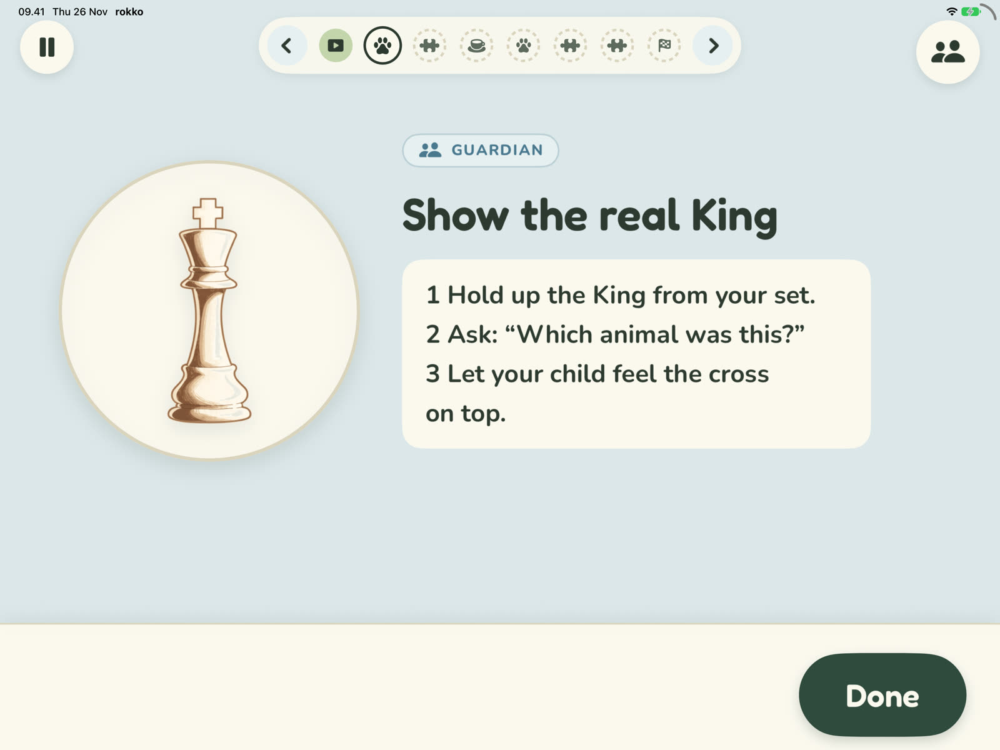
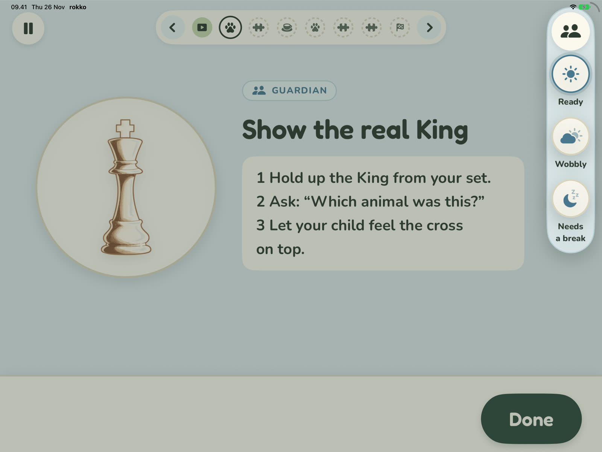

One day, they opened Rokko…
…and chess became games to touch.
- One question, every time. “Find the King.”
- No scores, no buzzers, no red.
- Help that fades: a clue, a pointer, the answer.

Once upon a time…
And a grown-up who wanted to share chess with them.
Every day…
Fast. Loud. Played alone.
rokko
Chess, taught the way your child learns.
One day, they opened Rokko…

Because of that…
The grown-up hands over the King. The child feels the cross on top.
And on any day…

Until finally…
Castling: the only move where two pieces move together. The child is the king. The grown-up is the rook.
That's why it's called
rokko
from rokirovka and arrocco: castling

The next chapter is yours.
Get the iPad beta on TestFlight
iPad only · scan with your camera